2013
E' nato Edoardo!
03-01-2013
Ciao piccolino benvenuto! Un abbraccio grande a mamma Anna Gloria, papà Nicola e al fratellino Matteo.
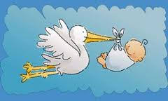
Nouvel An à Paris!
06-01-2013
Diario di viaggio
29 dicembre
sveglia alle 5 del mattino, le bimbe sono elettriche per la partenza. Prendiamo l'aereo, per Margherita è la prima volta! Sorvoliamo le alpi all'alba e atterriamo a Parigi.
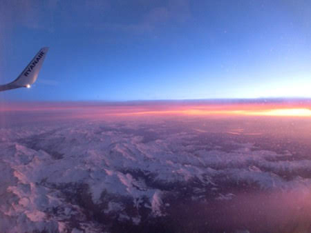
Andiamo a casa della famiglia francese dove la nostra amica Pascal (Pascala per Mati)
ci prepara un ottimo pranzetto a base di patè di foigra e anatra arrosto e ci da un pò di consigli per girare la città. Dopo un riposino pomeridiano usciamo e andiamo a vedere la Tour Eiffel in notturna e poi ceniamo in un ristorantino greco con Flavio's family, i nostri compagni di viaggio (AUGURI MASSIMO)
!
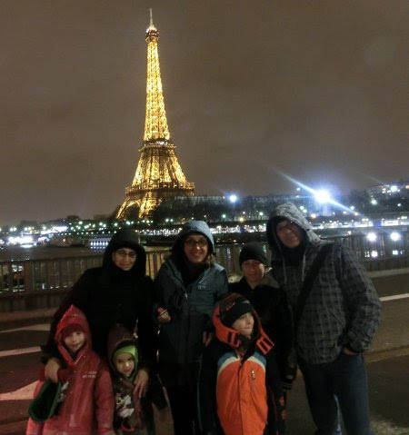
30 dicembre
Si inizia la giornata con una bella colazione a casa, due coccole al gattone Saxo
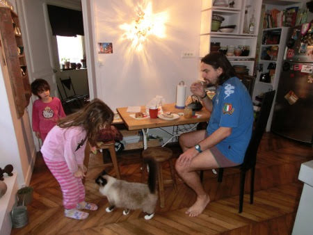
che ha la buffissima abitudine di bere dal lavandino del bagno...
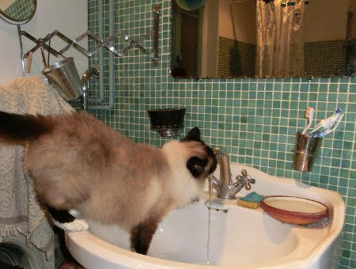
e poi si esce. Appuntamento all'istituto del mondo arabo, con la sua bellissima facciata

dove c'è una famiglia di elefanti....

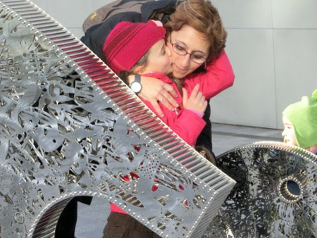
un thè alla menta, un pò di corse per le scale metalliche e un affaccio dalla terrazza panoramica

Passeggiata sul lungo Senna, che è in piena
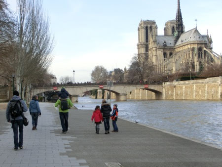
fino a Notre Dame dove ci incontriamo con l'altro gruppone romano, i Barsotti's con sorella e nipote e gli Zocca's!! Siamo davvero tanti ... tutti alle giostre!
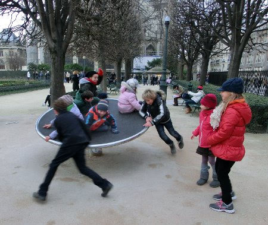
Cena a casa e relax .. ognuno a modo suo .. Marghe guarda un cartone con Saxo.

31 dicembre
Oggi prendiamo la metro
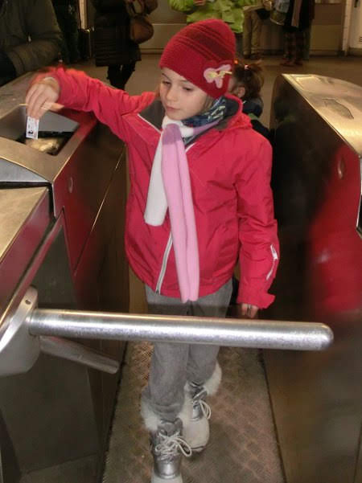
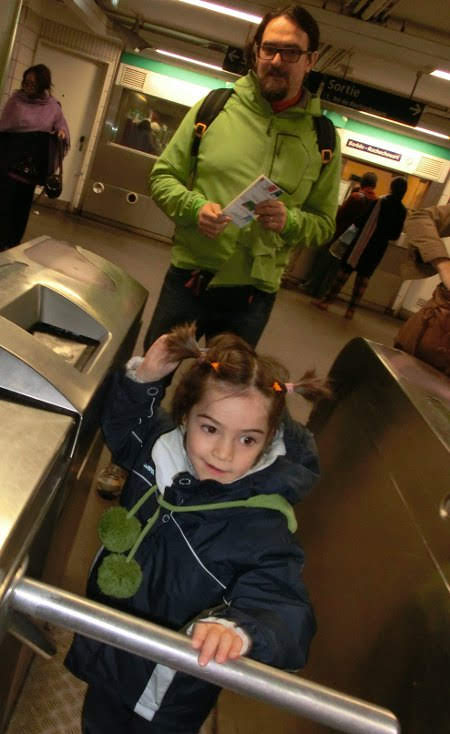
e andiamo al Louvre!
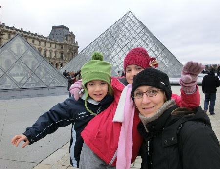
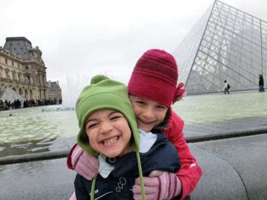
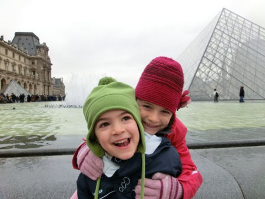
Siamo ben organizzati, con le guide interattive
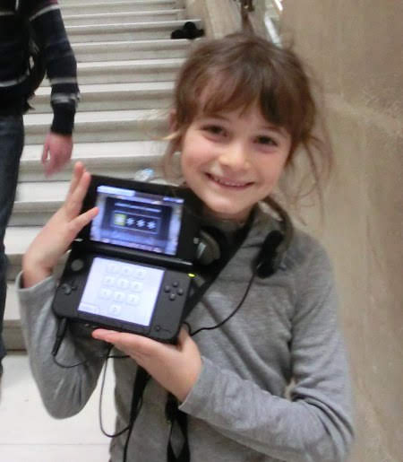
e il passeggino per i momenti di stanchezza
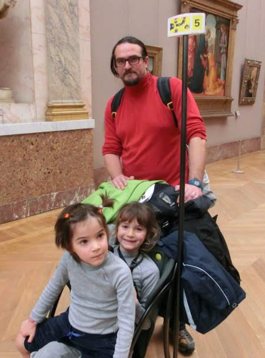
e infatti ci piace moltissimo!
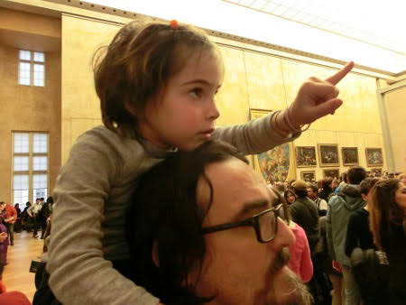

soprattutto le nostre interpretazioni della Nike

e di amore e psiche
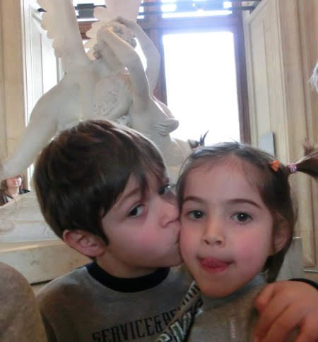
che appetito che ci ha messo questo museo ... ripieghiamo sulla brasserie!
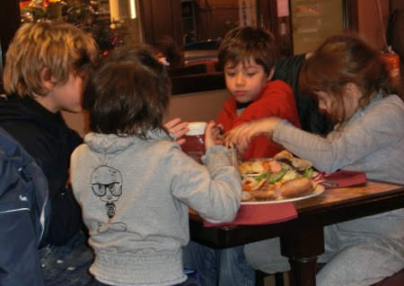
E poi il cenone di capodanno tutti da noi!!! E alle 2 di mattina tutti a ninna!

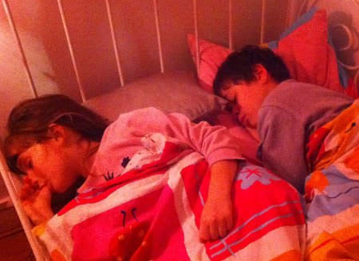
1 gennaio 2013
Il nuovo anno si inizia con una bella passeggiata a Monmartre!
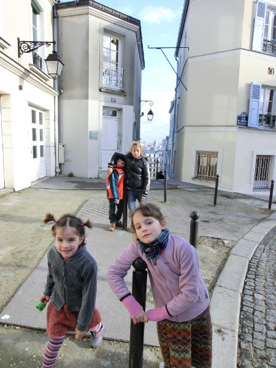
tra i vicoletti, la vigna, i localini famosi, le cioccolaterie e i mercatini di natale
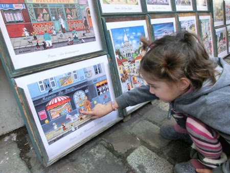
per arrivare infine al Sacro Cuore
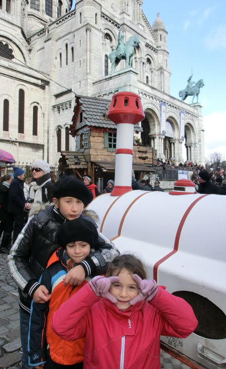
a bere vino e cioccolato caldi

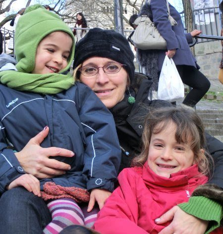
2 gennaio
Oggi si va a Disneyland!
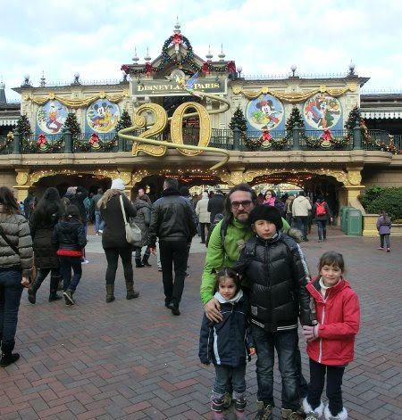
a divertirsi un pò nel mondo dei bambini, tra castelli da fiaba
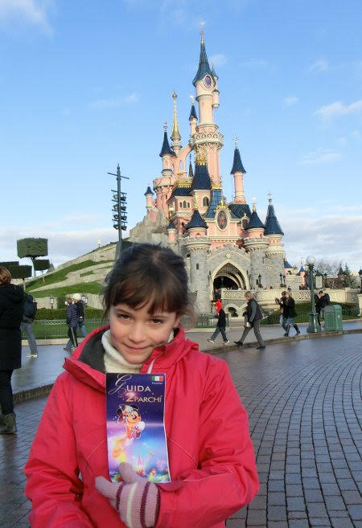
labirinti
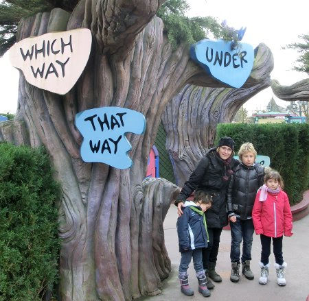
e castelli della regina di cuori
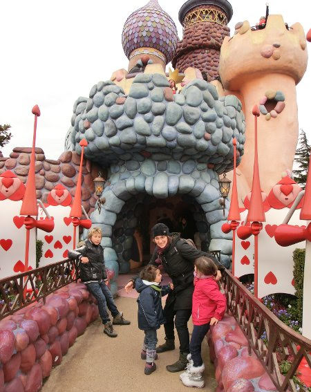
cappellai matti
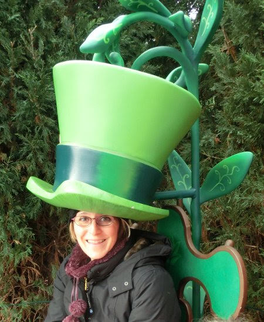
CIP&CIOP
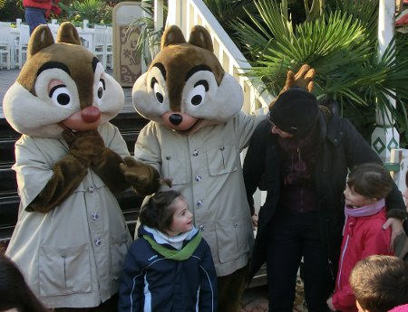
il cammello di Aladin

la spada nella roccia
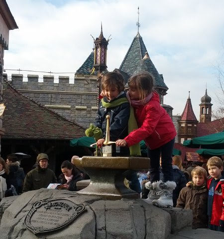
le auto del futuro

e infine tutta la serie di Monster&Co., con l'estrattore di urla

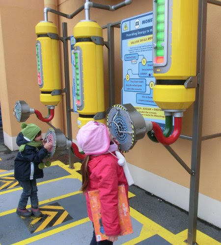
Mike
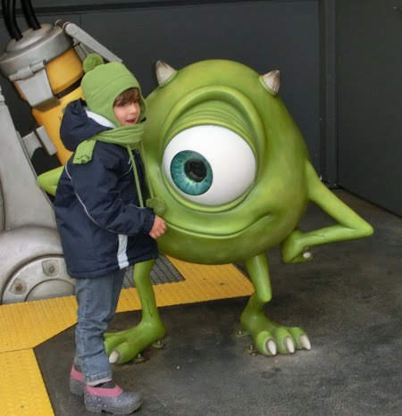
e la porta di Boo
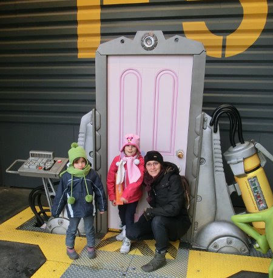
3 gennaio
Si va al Parc de la Villette, dove vediamo la mostra sul design
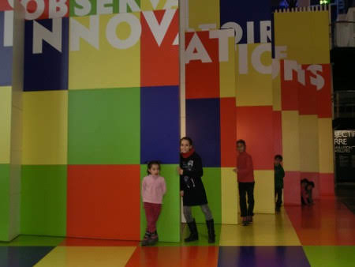
l'area della matematica e la scienza, dove le bimbe provano a generare un pò di Watt

e ad ascoltare musica

il planetarium e un film sugli animali selvatici con lo schermo enorme del Geode. La sera cena al ristorante orientale, con cous-cous e tajine.
4 gennaio
Oggi saliamo sulla Tour Eiffel, al primo piano
** 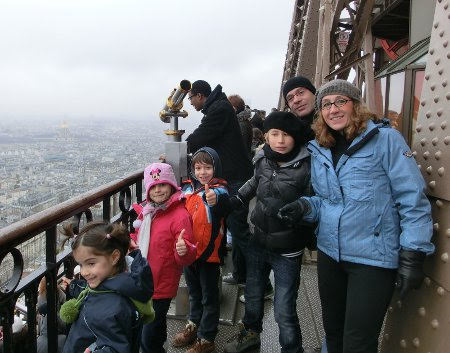
**e poi su su in cima ... dove ovviamente siamo in nube ...
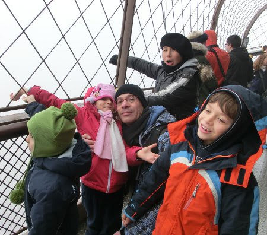
ma molto molto in alto!!
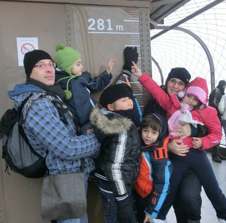
Poi un altro bellissimo museo, la gare d'Orsey
5 gennaio
il nostro ultimo giorno di vacanza andiamo a vedere il centre Pompidou
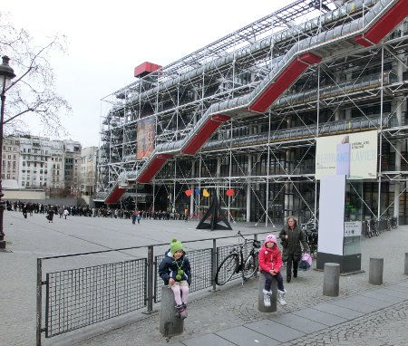
e l'arco di trionfo
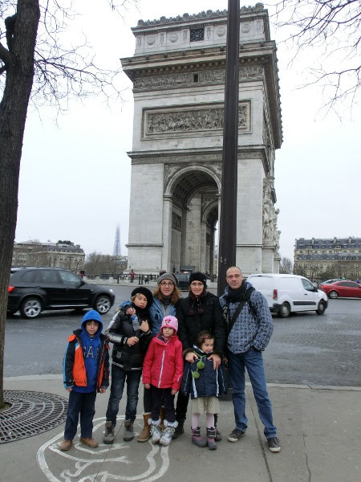
e poi si riparte! Paris je vous verrai la prochaine fois!!!
E' proprio bella Marta!
14-01-2013
A Matilde piacciono tanto le bimbe, e Marta è davvero una cucciola!!!

P in TV!
20-01-2013
ore 7.35 del mattino: 'Bimbe svegliatevi, correte a vedere che c'è papà in televisione!!'
Assonnate si catapultano giù dal letto e con gli occhi semichiusi 'Ma come ha fatto papà ad entrare nella televisione??'
Prima uscita in maschera
28-01-2013
Oggi approfittando della bellissima giornata, indossiamo le maschere di carnevale (nonna franca style)
e via al porto di ostia a tirarci coriandoli e stelle filanti!
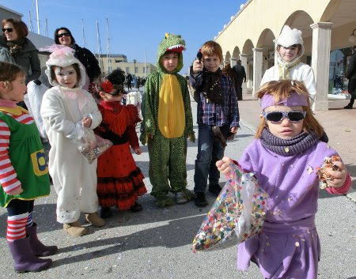
ci sono cowboys, coccodrilli, fragoline, pippi calze lunghe, fatine, spagnole, gattini, pirati, principesse, streghe e pagliacci ... e chi più ne ha più ne metta!
Un pò di stretching 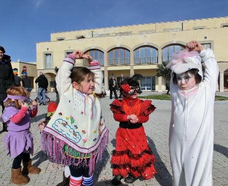
e poi tutti a saltare sulle strisce con papy!
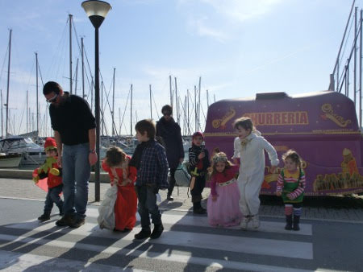

Poi un pò di pizza con la 'mortazza' in riva al mare
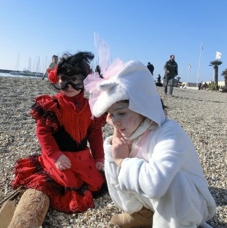
e un altro pò di giochi...
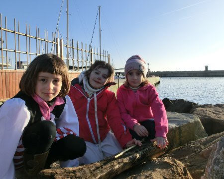
e un fiorellino per mamish
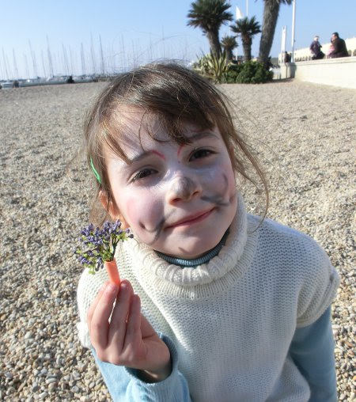
Maschere ...
04-02-2013
Oggi andiamo al laboratorio di maschere di carnevale e facciamo gli animali dei boschi laziali
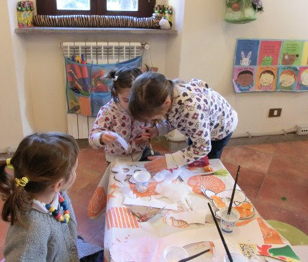
uno scoiattolo e una volpe (forse)
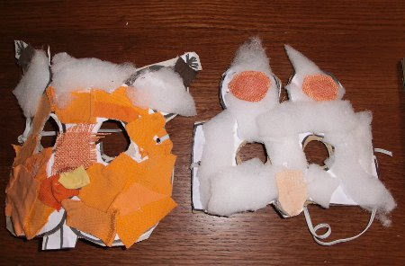
siamo state proprio brave, vero? Soprattutto Margherita perchè ultimamente si concentra a fare le cose manuali e che richiedono molta attenzione (ha imparato anche il ponte!!!!)
Come sto?
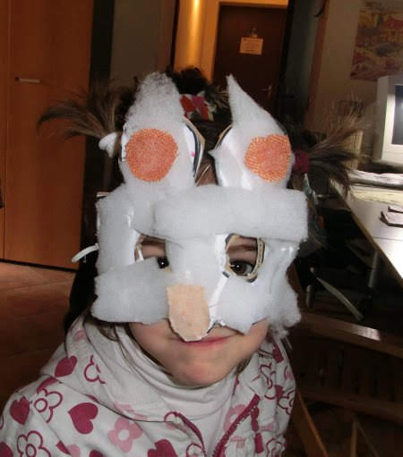
Ci fermiamo a pranzo al ristorante bio della Valle dei Casali e dopo tutti sul prato a correre e a giocare a ruba bandiera per smaltire l'abbuffata !!

C'e anche chi si dedica ad attività più bucolico-contadine....
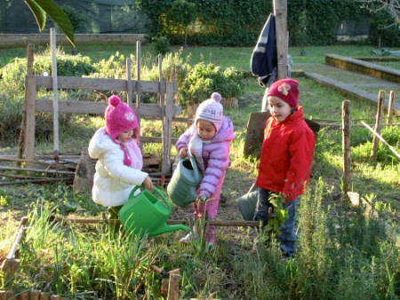
We di freddo e sole
11-02-2013
Biciclette in macchina e via in pineta a Ostia. La giornata è fredda ma c'è un bellissimo sole. Ci addentriamo tra i sentieri, anche la gnometta Meggy pedala con la sua mini bicicletta! Brava!
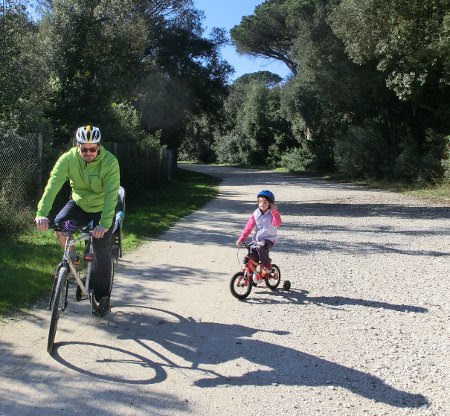
i maschietti faticano a stare dietro a mati [
e anche i grandi!
ITALIA UNO!!!

Poi tutti a mangiare la pizza nella radura
e a fare i salti!
E la sera un pò di compiti ....addolciti da patatine e carciofi fritti, che Matilde adora!
E domenica pronti per un'altra giornata di sole al porto di Ostia per la festa di Carnevale. Ci trucchiamo tutti ...


La pagella!
19-02-2013
Al concorso della class(e)
1A i giudici Claudia (italiano)
, Simonetta (matematica)
, Germana (inglese)
eleggono all'unanimità, con ben TUTTI 9 , la signorina Matilde con il titolo di 'Miss Bella Pagella'!
Continua a leggere ....
Inoltre:
Attenzione verso le attività scolastiche: PRESENTE
Partecipazione alle attività scolastiche: ASSIDUA
Impegno nelle attività individuali: PROFICUO
Organizzazione del lavoro individuale: AUTONOMA
PS: 9 è il voto massimo assegnato!
Brava MATI!!!!!!
E sono 11
21-02-2013
Nel linguaggio dei fiori la gerbera rossa indica l'amore passionale e la vittoria, la gerbera gialla è simbolo di gloria, la gerbera arancione è simbolo di allegria e soddisfazione! Auguri amore mio!
Influenza!
27-02-2013
Ha colpito proprio tutti .. la roccia Matilde, la disidratata Marghe, e il papone! :(
M&P a Catania
04-03-2013
Questo we M&P ci hanno lasciate con i nonni e sono andati a Catania!
Hanno fatto una bella sorpresa ad Annagloria per il suo compleanno e lei è stata contentissima! ('sono scioccata!')
Abbiamo conosciuto il piccolo Edoardo e rivisto il suo dolcissimo fratellino Matteo

.... e poi ammettiamolo ...tornare a Catania è sempre emozionante ... due passi in centro con il sole
un giro per il porticciolo di ognina (dove una volta sono caduta in acqua in pieno inverno!)
una puntata alla pescheria per comprare un pò di pesce fresco e qualche chilo di pepato dal nostro spacciatore di fiducia!
farsi appositamente 'fregare' da un venditore ambulante che ti appioppa 25Kg di arance e una casseta di fragole ....quando volevi solo fare una macedonia!

sorseggiare il fantastico 'mandarino al limone'
camminare sul lungo mare mentre le onde alte si infrangono sugli scogli neri
una puntata da 'Ernesto' con arancini, pizzette e cartocciate ... un'occhiata all'Etna innevata
una chiacchera e un pranzo con parenti e amici, tra involtini di pesce spada fatti da Andrea, pasta alla norma fatta da zia Maria e dolci di ogni tipo offerti dai cugini!
'Come si fa a non amare questa terra!!'
Esempi!
11-03-2013
Settimana bianca a Siusi
25-03-2013
Eccoci di nuovo nel bellissimo paesaggio dell'Alpe di Siusi! Il gruppone si espande, quest'anno ci sono anche Sonia, Giulio e Sofia!

Il tempo è perfetto, grande nevicata il secondo giorno e poi tanto sole e neve stupenda!
I bimbi fanno tutti il corso di sci, anche Margherita
Impara a prendere lo skilift con il maestro Alex
il tapis roulant
la seggiovia
e sciare le piace davvero...guardate che velocità tra quei tunnel!!!
Matilde invece fa il corso di 2 livello col bravissimo maetsro Sigi che li porta ovunque,
infatti la incrociamo spesso sulle piste col suo caschetto giallo!
E' bravissima e fa anche la gara di fine corso ("ma che pista era quella della gara?" ... la competitività non è il suo forte!)
E comunque è super felice quando può sciare con la sua sorellina e M&P

e quando può correre con Sofia in mezzo alla neve fresca
Ma anche i grandi si divertono! La compagnia è fantastica, ci sono anche Enrico e Laura con Matteo e Andrea e i milanesi Matteo, Micaela, Jaime e Ruben!
I pranzetti nelle baite sono sempre degni di nota ... [
come dimenticare la zuppa di fieno in crosta di pane e il canederlo dolce con le prugne!! [
e anche la pausa caffè al sole sul sedile pecoroso...
il presepe innevato.....

e un pò di coccole che fanno tanto bene....
... e poi .... tutti insieme a sciare ... grandi e piccoli!
Ciao Siusi alla prossima!!!!!
Auguri Mapi
28-03-2013
Pasqua in liguria
03-04-2013
Finalmente da zia e Morgan!! Quanto avete aspettato questa pasqua!!!
Il tempo non è il massimo ma ci consente di fare delle belle passeggiate nel bosco
raccogliendo asparagi
e fossili di conchiglie!
Un pò di classico struscio a Finale con partita a palla in piazza per le bimbe e aperitivo per i grandi!
Poi l'immancabile colazione di pasqua con la scoccetta
e Marghe che ancora non ha capito come si apre l'uovo!
Una passeggiata 'in piazza' .... questa foto uguale identica ce l'avevamo anche io e zia Giorgia!!!

Pasquetta è anche il mio compleanno!!! Facciamo un bel picnic con gli avanzi pasquali in spiaggia!
Giochiamo

e come corrono le bimbe e il ciccio!! Due passi sul molo
acquistiamo anche dei bellissimi orecchini a forma di paperella per Matilde e fragola per Margherita[
PS: un grazie speciale a nonna Franca e nonna Maria che hanno fatto questo bellissimo collo di lana jamaicana per Morgan!!
Arriveduar!!! [
Primavera!!
20-04-2013
Finalmente è arrivata la primavera! Nel nostro terrazzo sbocciano i primi fiori: le calle, le sterlizie, le primule, il glicine, la bellissima peonia, la camelia, il gelsomino, il caprifoglio e tanti altri!
E anche la caffarella si è riempita di margherite
Come siamo fatti
23-04-2013
"Mapi, da grande voglio fare la dottoressa degli animali in Africa" ... lo ripete spesso Margherita, e allora ieri abbiamo cominciato a capire qualcosina ... e i risultati su un cervo (così ha detto Marghe)
sono questi

Poi ha collaborato anche Mati ... ed anche l'elefante è stato messo sotto osservazione

Beh, è solo l'inizio, ma sembra interessante!
Eventi di Aprile
01-05-2013
Questo mese sono successe tante cose:
la festa di compleanno di Sara
il battesimo di Marta
dove Margherita e Matilde erano 'deliziose' (mhhh marghe non ama molto farsi fotografare e fa sempre tante smorfie)
e concentrate su questa nuova cerimonia!
poi siamo usciti per la prima volta con il camper .... e abbiamo incontrato Giorgio e EDEMANUELA!! Miiiiii non ci posso credere....anche voi qui!!!! HAHAHAHA
abbiamo fatto il primo bagno
e la prima spaghettata con le vongole e i piedini nudi nella sabbia!
certo che insieme ad Anna siamo proprio tre scimmiette smorfiose..
e a volte coccolose...
ma sempre bellissime!!!

Siamo andati al museo di Piana delle Orme dove c'era una manifestazione della LEGO. Le piccole hanno costruito varie cose con manciate e manciate di costruzioni
mentre i grandi hanno contribuito alla costruzione di un puzzle gigante che rappresentava Fontana di Trevi!

Queste belle giornate ci hanno fatto venire voglia di abbellire il nostro terrazzo facendo un pò di giardinaggio con nonno Gianni
e diverse biciclettate, corse e verticali alla caffarella!!

Poi abbiamo salutato Raymond che parte per l'India
con una bella cenetta! A presto Ray!!!
Leviamo le rotelle?
16-05-2013
Primi tentativi di Margherita senza rotelle...
Greek friends!!!
19-05-2013
Quest'anno abbiamo fatto amicizia con una bella famiglia greca: Ioannis, Georgia, Vassilis e Georgeos.
Appena sono arrivati ci hanno portato dei bellissimi puzzle e gli stickers e abbiamo pranzato insieme!

Abbiamo festeggiato insieme la loro pasqua ortodossa, mangiando le uova rosse e l'agnello con l'arancia [
e l'immancabile insalata greca!
Poi abbiamo trascorso qualche bella giornata tutti insieme ....[
e mentre le mamme e i papà prendevano l'aperitivo a bordo piscina....
noi abbiamo messo prima i piedi a mollo
e poi abbiamo fatto il bagno!!
e qualche ruota!
Passeggiata per Lugnano in Teverina dove c'erano gli animatori e siamo diventati farfalle
principesse
principi

e pirati

abbiamo fatto la battaglia con le spade [

ma poi ci siamo riappacificati!!!
Ciao amici ...speriamo di rivederci presto! Dear friends hope to see you soon!!

Buon compleanno Alessia!!!
25-05-2013
Tanti auguri da tutti noi ... e un abbraccio forte forte da Margherita!
Happy birthday Evan!!!!
25-05-2013
From India .... a big kiss!
Evan ... a very horse rider!!!
Sdentata!
31-05-2013
Sono caduti tutti e due!!
Buon anniversario M&P!
01-06-2013
Giorni di saggi, recite e teatri
07-06-2013
Questo mese di giugno abbiamo avuto tante cose da fare!Margherita ha fatto la recita del corso di teatro a scuola raccontando la storia degli antichi romani (con tanto di saluto in latino 'Ave mater, ave pater')
: da romolo e remo che vengono abbandonati nella cesta lungo il fiume, alla lupa che li alleva, alla fondazione di Roma, al ratto delle sabine.
poi il saggio di psicomotricità
con diverse pause per abbracciare la maestra Annarita
e l'amichetta Iolanda! [
e poi infine una bella medaglia!
e anche quello di Matilde
e un pò di succo per dissetarci!
Poi M&P sono andati a vedere Matilde che faceva la cortigiana nel Rigoletto al teatro Valle!
Che emozione sentire tutti i bambini cantare l'opera seduti in platea! Grazie maestra Claudia che hai realizzato questo bel progetto a scuola!
La classe di Mati ha anche rappresentato l'Avaro nella recita finale.
Matilde è stata bravissima, voce squillante e sicura sul palco!
Festa di fine compleanno di Matilde e Maria Elena ....e infine anche Matteo!
16-06-2013
Matilde, Maria Elena e Matteo fanno i compleanni quando la scuola è chiusa per le vacanze, così abbiamo fatto una festa anticipata al parco della Caffarella!
I bimbi hanno giocato tantissimo con l'animatore Andrea

che poi si è trasformato in mago e ha creato i papà volanti!
ha fatto tante magie misteriose

e poi ha anche fatto apparire un coniglio bellissimo!

Infine le torte
e un bel pò di regali!
Il povero Matteo, causa bronchite, ha dovuto fare un'altra festa che è andata benissimo lo stesso!
E che belle principessine a questa festa!! Terribilmente eleganti....quasi irriconoscibili!!!
Primo saggio di ginnastica artistica!
17-06-2013
Le bimbe sono pronte per il saggio, serene e contente! (a parte l'occhio nero di Matilde che si è data una ginocchiata saltando sul trampolino!!!)

e che mega acconciatura che vi ha fatto mamish!!
Il tema del saggio sono le favole e loro sono i topolini di Cenerentola! Eccole alla prova generale al palazzetto con la loro dolcissima maestra Cristina.
Inizia la musica e arrivano le piccole gnome! Che belle con le loro orecchie e le codine!


Brave cucciole!
Accampamento a Sperlonga
24-06-2013
Finalmente inizia l'estate e ne approfittiamo per accamparci a Sperlonga, due camper e due tende! Che forza! Ci divertiamo al mare, chi con la 'canova'
chi a fare castelli di sabbia
chi a nuotare
e poi stanchi e affamati tutti a tavola!!
Grandi ....
e piccine!
Mare ligure ... ma soprattutto zia e morgan!!
16-07-2013
Finalmente è arrivata l'ora di andare da zia Giorgia e Morgan insieme ai nonni.
'Hei ragazze vi stavo aspettando!! Dove vi porto??'

'A fare tante passeggiate nei boschi....
e quest'anno convinciamo anche zia a venire con noi al mare! Evviva!!!'[
sempre sotto la tua stretta sorveglianza ovviamente....
Poi andiamo a casa di Camilla, che sarebbe la fidanzata di Morgan ma lui non sembra essere molto interessato! Ci sono tanti animali con dei nomi divertenti
e un cagnone buffissimo!!
Andiamo sui pattini....
ci stiracchiamo sui muretti
e ci divertiamo alla fontana sul lungomare

(PS: Per aggiornare il nostro storico malattie....Marghe si è presa la 5 malattia e una bella ferita infettata sul piedino!!)
Insomma due belle settimane di relax .... e alla fine ogni scusa è buona per farsi coccolare un pò da zia!
PS2: GRAZIE NONNI per la pazienza!!!
Castiglione del Lago
29-07-2013
Un we al lago per spezzare un pò questa lunga estate!
Ci sono anche Caterina, zia Betta e Sara con Catia e Ale!
Il campeggio è molto carino e silenzioso, certo l'acqua del lago non è il massimo ma ci divertiamo tutti lo stesso, tra nuotate, tuffi, relax sui materassini, giochi di carte, giri in canoa (con il nuovo prototipo di vela)
...[


Happy Birthday RAY!!!
01-08-2013
a big kiss from Italy
Intermezzi Valdolmiani
02-08-2013
E' qui che con Mapo (Papy, Vibo)
ci riposiamo e ricarichiamo!
Stiamo un pò con i nonni e con la bisnonna Maria
con le cuginette Cate
e Marti ( e il nuovo arrivo Chicco)
e facciamo tante cose consolidate, come la passeggiata nel fiume alle Cafanne
o le chiacchere sulla fonte
e cose nuove, come marghe in bici senza rotelle[
e il museo del pianoforte storico e del suono a Fabriano con M&P e i nonni
La truppa a Marotta
07-08-2013
Siamo in trasferta al mare ... Marghe, Mati e i cugini Martina e Guido.
Cenetta in camper
Gelatino

E dulcis in fundo ... Bagno di mezzanotte
Calabria ionica
24-08-2013
Quest'anno un itinerario poco turistico, la calabria ionica da Rossano Calabro a Roccella Ionica, sempre con i nostri fedeli compagni di viaggio Giorgio, Manu e Anna[
e i due inossidabili camper Ronzinante e Nonno Tartarugo!

Iniziamo con una visita al museo della liquirizia Amarelli a Rossano, dove troviamo una traccia dell'attività della nostra famiglia nel settore....e conosciamo il proprietario della fabbrica che ci racconta di Don Salvatore (il papà di nonna Lilly)
....che amozione!! [

Poi tutti al mare!!! Primo campeggio a Punta Alice, vicino Cirò Marina.
C'e tutto quello che 'le bimbe' desiderano: l'animazione, il parco giochi (in cui perdersi la sera)
, una bella spiaggia di sassolini in cui si aggirano Miss sorriso furbetto

e miss fucile ad acqua
e una mega piscina in cui fare i tuffi
Che soggette!!

Scena sulla riva : nugolo di bagnanti intorno ad uno squalo di 2 metri spiaggiato, signore tremanti e preoccupate che i bambini possano essere traumatizzati da questa immagine e Marghe che supera la barriera di gente e va ad accarezzarlo!!!
Giorgio, in risposta al grido di terrore di una signora: "Tranquilla signora, è lo squalo che deve avere paura di Margherita!!!"
"Marghe come è la pelle dello squalo?" "mhhhh ... un pò ruvida e un pò morbida!!"
In questa vacanza impariamo a pescare con la canna

a fare snorkeling con maschera e pinne
e a nuotare al largo per vedere pesci e meduse
Ma soprattutto questa vacanza è all'insegna del vero relax
e delle coccole
Per ferragosto ci spostiamo al fresco sulla Sila. Ci divertiamo come scoiattoli a SilAvventura
tra percorsi in mezzo agli alberi, moschettoni, carrucole e pareti attrezzate


E poi tutti sul lago Arvo, prima a tirare sassi
e dopo una bella cenetta

con il nostro mitico Mr BBQ!!!! (e il Michele di turno che attacca bottone e ci regala qualche bottiglia di vino!)

Ovviamente non possono mancare i fuochi d'artificio a Lorica, la festa di paese a Lorica, il benzinaio a Lorica, etc...
Andiamo a visitare la riserva del corpo forestale nel Parco nazionale della Sila

dove troviamo i recinti con i lupi e i cerbiatti e passeggiando nel bosco
cerchiamo del materiale per creare buffi cappelli!
Pranziamo sul lago Ampollino, dove ci accampiamo e rimaniamo fermi fino alla sera ad aspettare il defluire del traffico! Sono tutti qui i calabresi a ferragosto!!!
Concludiamo la tappa montana con una visita ai Giganti della Sila, una piccola foresta di alberi secolari altissimi
e con tronchi enormi!

E adesso di nuovo al mare ... tappa a Le Castella!
Che bello il castello al tramonto!

e che divertimento affittare il gommone!!!
e fare i tuffi al largo!

Poi ci spostiamo ancora più a sud a Santa Caterina dello Ionio, dove Giorgio pesca un bel pescione [
e la sera ci fermiamo a cenare in spiaggia al chiaro di luna!
Visitiamo una chiesina piccolissima, la cattolica di Stilo
e infine lasciamo la costa Ionica per fermarci a Mammola, ridente località famosa per lo 'Stocco' e per il MUSABA (Museo di Santa Barbara)
, un posto molto interessante in cui ci accoglie un enorme jeco
e ovunque troviamo murales coloratissimi
alcuni molto divertenti
bellissimi mosaici
alcuni ancora da completare ... la piccola artista Matilde lascia il segno del suo passaggio nel laboratorio all'aperto
sculture buffe sono ovunque
e infine la particolarissima casa dell'artista Nick Spatari, in cui non ci dispiacerebbe vivere!!
Il nostro viaggio termina con una tappa al bowling di Catanzaro in una giornata di brutto tempo
e un ultimo bagno a Maratea!
NOTA MALATTIE: a Margherita esce l'ernia inguinale! :(
Arrivederci alla prossima vacanza tutte e tre insieme!

Spidocchiati!
24-08-2013
Quest'estate le bimbe e la mamma si sono prese i pidocchi! Però il mitico papone ha rasato tutte e tre e i pidocchi sono spariti! Nuovo look per tutte! :)
Barcellona
02-09-2013
Il nostro quinto scambio casa è con un'allegra famiglia di Barcellona! E questa volta vengono anche nonno Gianni e nonna Lilly!
24: si parte con l'aereo....ognuno con la sua valigia
La casa a Barcellona è molto bella e in centro, dietro il mercato della Boqueria. Pranziamo e poi due passi al mercato, pieno di frutta coloratissima [
e succhi e ghiaccioli di tutti i tipi!
poi andiamo a Palau Guell. Le bimbe hanno il loro primo approccio con Gaudì e con l'aiuto delle audio guide apprezzano molto di più la visita!

Poi tutti sul tetto, pieno di comignoli effetto alberi di una foresta incantata!
A seguire visitiamo la zona del porto
vicino alla statua di Cristoforo Colombo

25 : Visita alla Sagrada Familia! Imponente, affascinante, mistica!
Iniziamo il gioco di questa vacanza: P ha avuto la brillante idea di comprare un block-notes ciascuna per scrivere e disegnare le emozioni....e funziona!
Qui le buffe guglie della Sagrada
e il disegno di Mati[
Pranziamo in un bistrò difronte alla Pedrera, e poi entriamo a visitarla
Torniamo a casa a piedi attraversando Diagonal. Relax e poi a cena fuori a base di paella e 'fideua'(una paella con degli spaghetti)
.
26: oggi piove! Andiamo al MACBA, il museo di arte moderna. [
dove le bimbe disegnano i loro capolavori, come 'Caos di oro e argento' ! e cena con le Tapas!
27 : mattina alla Fondazione Mirò

mhhhhh....figo! Anche questi li disegnamo!
e sulla terrazza buffe sculture ....e buffi personaggi!


passeggiata per i giardini del Montjuic

Stasera le bimbe stanno con i nonni e M&P si regalano un concerto a Casa Batlò!

28 : mattinata di shopping nel quartiere del Barrio Gotico, e S.Maria del Mar.
tutti insieme
e pranzo con tapas e cerveca! (zumo per le bimbe!)
Relax a Parco della Ciuttadella
tra mammut
e gechi!
e poi ancora passeggiate per questa bellissima città. Entriamo nella Cattedrale, dove nel chiostro ci sono delle oche....
.... e le disegnano: Mapi
Mati
Marghe

Ci fermiamo in strada ad ascoltare un gruppo di ragazzi molto bravi che cantano e suonano.
29 : I nonni sono partiti, e noi andiamo a visitare il bellissimo museo Cosmo Caixa. All'ingresso i due barbuti alla reception non ci danno retta....chissà perchè!!!!
Il museo è bellissimo, con un enorme albero al centro
è pieno di esperimenti da fare
e un acquario enorme[

... allo shop M non resiste al pupazzetto della carie! Che dolore!!!
e ad avere il mondo ai suoi piedi!
30 : Oggi si va in bici! Prima al museo di Picasso e poi al mare! Percorriamo tutta la zona del Porto Olimpico
e facciamo anche il bagno e giochiamo sulla spiaggia!
Un pò di riposo....quanti Km in bici! Bravissime cucciole!
Tornando verso il porto vecchio e la barcelloneta troviamo un signore che ci fa fare le bolle di sapone giganti!

A fine giornata .... dai Marghe, dai Mapi, che lumaconi!!!
Torniamo a casa sfiniti!
31 : Il nostro ultimo giorno a Barcellona (SOB :( )
lo dedichiamo a Gaudì e andiamo a vedere il suo ennesimo capolavoro, Park Guell

fortuna che c'è la scala mobile per arrivare!
però ne vale proprio la pena! E' stupendo!
tutte queste maioliche colorate!
e un geco!
si fanno anche buffi incontri....

Arrivederci Barcellona! E' stata davvero una vacanza fantastica!!

Benvenute micine!!!
04-09-2013
Oggi siamo andate a prendere due super cucciole di 40 giorni! Eccole appena arrivate a casa nostra! Accoccolate da brave sorelline!
Si chiamano Pimpa (di margherita)
e Quit (di matilde)

Sono due giocherellone ( e amano le scarpe come tutte le donne)
e sono buffissime, giocano tra di loro rotolandosi e facendosi gli agguati e poi si addormentano nelle posizioni e nei posti più strani!!!
Auguri Matilde!!!!
08-09-2013
Un numero speciale questo 7!!

Un bel mazzo di fiori da parte della tua sorellina
e una piccola festicciola a casa con gli amichetti (sei stata bravissima a fare la tua torta di compleanno... un 7 di pan di stelle!!)

E dopo il trambusto un pò di relax in buona compagnia con una bella fetta di cocomero!

e una dolce micetta addormentata su di te!!
Proprio un bel compleanno vero??
Matrimonio di Ele&Toni
22-09-2013
Iniziamo dall'addio al nubilato! Una bella cenetta su un barcone sul tevere ....con qualche accessorio divertente....

e un pò di scrap per fare i biglietti di auguri agli sposini!
Poi il grande giorno.... due coccole a Marta per rilassarsi un pò ..

due colpi di spazzola....et voilà!
... manca solo il vestito... ah ....eccolo!
Ele...lo devi indossare! OK adesso sei perfetta!
Facciamo il taglio del nastro (da cantiere)
e poi tutti i tuoi nipotini intorno
che non vedevano l'ora di portarti il velo!
Si va in chiesa .... e si esce sposati! Facile no??
Evviva gli sposi!
pronta con il riso Cate?
Eccoli!!
Tantissimi auguri ragazzi!!
Da tutti noi!
E per regalo un oggetto speciale fatto da andrea, il cavatappiano!!

Auguri Margherita!
24-09-2013
Tanti auguri per i tuoi 5 anni cucciola!!!

E per regalo una lezione di prova di equitazione (dove tu hai chiesto alla maestra 'quando andiamo al galoppo' e poi 'quando saltiamo gli ostacoli?' )
e prova anche Mati sul pony Caterina!
E poi nel pomeriggio tanti amichetti a festeggiare il tuo compleanno!

Maker Faire Roma! Il nostro Papà è un inventore!
07-10-2013
Per la prima volta a Roma un evento internazionale....il maker faire, la fiera degli inventori!
E ovviamente il nostro Mapy non può mancare, con i suoi progetti e le sue creazioni artistiche.
Allo stand ha portato la terrorizzata pianta di pomodoro oggetto dei suoi studi-torture ( http://pleased-fp7.eu/
)
e il cavatappi musicale (un regalo per Ele&Toni)
Lo stand era affollato di curiosi (riconoscete qualcuno?)
ma le vallette erano più brave ...e più belle di mapy!!
Alla fiera c'erano tantissime cose interessanti da vedere: le stampanti 3D
la scuola di robot subacquei per bambini
la gooble bike (la bici collegata a streetview di google maps)
i robot che giocano a pallone
gli stecchini luminosi fatti dai bambini

Insomma proprio una bella giornata!!! Bravo MAPY!!!
Venezia e la Biennale
21-10-2013
Questo we andiamo a Venezia con zia Betta e Caterina ad acculturarci alla Biennale d'arte!

La città è magica e le bimbe sono entusiaste dei canali, dei ponti, delle calli, dei campi, dei sottoporteghi ... e stupite perchè non ci sono nè strade nè macchine!


Certo il ponte più affascinante è quello dei 'sospiri', la sua storia le incuriosisce molto!

E poi le gondole....che belle...e che romantiche!
A Venezia si corre senza pericoli
si sale sui pozzi
ci si riposa quando si è stanchi

si trovano buffi giochi da fare

e strane statue ( o strane bambine??)
ottimi biscottini zuccherosi
... e poi non manca mai lo spritz con panini caldi e sfiziosi!
Ma adesso si va alla Biennale !
Giriamo per i padiglioni, ovviamente con cartina alla mano....per segnare tutto quello che vediamo ...
Iniziamo dal prato di rose
poi le luci psichedeliche

le composizioni di sedie
la stanza degli specchi e quella del buio pesto

la barca rivestita di azulejos
con all'interno un 'mare' fatto all'uncinetto!
... insomma sono proprio MATTI questi artisti!!
Anche se pure i veneziani .... in quanto a scorci artistici....
Ciao Venezia ... alla prossima!!
C'è poesia ...
25-10-2013
Matilde gioca alla maestra ... un pensierino di un suo "alunno" è davvero poetico
Io vado in montagna e porto
una matita colorata
un girasole raccolto in un campo
una pezza grande per dormire
WE abruzzese
28-10-2013
Evviva sono arrivati zia Giorgia e Morgan! Nel we si parte con loro e i nonni per l'Abruzzo. Tappa (triste)
a L'Aquila che ancora è tutta da ricostruire!

Troviamo un buffo frutto che nonno riconosce ... la maclura pomifera!
Poi andiamo a Santo Stefano di Sessanio, un bellissimo paesino alle pendici del Gran Sasso
La mattina si parte per una gita nel 'Piccolo Tibet', la piana che da Santo Stefano porta a Campo Imperatore. Ci sono tantissime mucche intorno a dei piccoli laghetti

dove anche se Mati cercava di tenerlo ...
Morgan è riuscito a scappare e a farsi il bagno, sotto lo sguardo interrogativo delle mucche!
Da Campo Imperatore facciamo la passeggiata che porta al rifugio Duca degli Abruzzi (2388m)
! Che salita!!!

Bravissime bimbe (e nonni!!)
...la salita è proprio ripida ...
ma il panorama da su è stupendo .. e che giornata estiva, senza una nuvola!
ecco il corno piccolo e il corno grande, un pirata e il suo pappagallo (ah-ah)
!
La sera abbondante zuppa di lenticchie e bistecca per recuperare le forze! La mattina dopo altra passeggiata ... meta Rocca Calascio! Almeno questa volta è in piano e ci sono tante cose da osservare ...

e da raccogliere (anche bacche velenose ovviamente!)
Poi una piccola pausa prima dell'ultimo pezzo in salita

che ci porta alla rocca, il castello più alto d'italia!
Qui il panorama è davvero mozzafiato, sembra di essere sul tetto del mondo!
Un ottimo pranzetto al rifugio della rocca, e soprattutto le coccole di zia, ci rimettono al mondo!
Perugia e Gubbio
03-11-2013
Questo we inizia con il compleanno di Anna! TANTI AUGURI!!!!
Alla festa passa anche Daniela con la sua nipotina ....che piacere rivederla!!!
Poi prendiamo i camper e ce ne andiamo tutti a Perugia! Ci raggiungono anche Alessia e Anita!
Qui fa freschetto e piove! La mattina dopo passeggiata per Gubbio
dove c'è la sagra del Tartufo .... gnam gnam!!!

La sera cenetta a base di strangozzi con gorgonzola al tartufo, salame al tartufo e crescette!!
Il giorno dopo sulla via del ritorno ci fermiamo a La Scarzuola, un posto incantato nascosto nei boschi! Il proprietario è un pò folle ma simpatico e ce la visitiamo tutta!
"_ rappresenta il Mondo in generale e in particolare il mio Mondo - quello in cui ho avuto la sorte di vivere e lavorare - dell'Arte, della Cultura, della Mondanità, dell'Eleganza, dei Piaceri __(anche dei Vizi, della Ricchezza, e dei Poteri ecc.)
in cui però ho fatto posto per le _ oasi di raccoglimento, di studio, di lavoro, di musica e di silenzio, di Grandezze e Miseria, di vita sociale e di vita eremitica, di contemplazione in solitudine, regno della Fantasia, delle Favole, dei Miti, Echi e Riflessi fuori dal tempo e dallo spazio perchè ognuno ci può trovare echi di molto passato e note dell'avvenire... " Tomaso Buzzi


Ciao ciao!!
Autunno
29-11-2013
Novembre è stato un mese di riposo dopo i tanti we trascorsi in giro! E' iniziato il freddo e si sta bene a casa! Ci siamo goduti le micine
e abbiamo fatto tanti dolci e lavoretti
e poi la sera una bella lettura
Ci siamo anche vestite da streghette per Halloween insieme a Sara e abbiamo fatto 'dolcetto scherzetto' per il palazzo!

e siamo andate a vedere il Cirque du Soleil con zia e Cate[
L'ermia
30-11-2013
La piccola Marghe oggi è stata operata di ernia inguinale bilaterale, o come dice lei "c'ho l'ermia".
Si è svegiata molto arrabbiata ancora sotto effetto dell'anestesia ma poi dopo altre tre ore di sonno era come nuova! Ha sorriso, mangiato, giocato con Giulia, una bimba ricoverata con lei, e poi si è messa a correre per i corridoi del reparto! La sera stessa ci hanno dimesse! E' stata ricoperta di regali ... anche il completo da fatina!
Compleanno di Flavio
08-12-2013
Per gli 8 anni di Flachen un bel BBQ nella casa nuova di Andrea, Marta e Riccardo!
Una bellissima giornata di sole ...[

con salsicce e bruschette fantastiche!
e poi le torteeeee .... auguri Flavietto!!!

8 dicembre
09-12-2013
Non poteva mancare anche quest'anno l'assaggio della mela caramellata a Piazza Navona!
Abbiamo anche visto un 'maestro dell'argilla' che faceva dei bellissimi vasetti di creta, che ci ha anche regalato!
Marghe-Nonno-Gina

Marghe-Nonna-Gina
Poi Mati&Papy ci hanno raggiunti in bici dopo aver finito i compiti

Auguri NONNA NONNA Maria!
11-12-2013
... dalle tue bis nipotine!!!

Napoli
16-12-2013
Oggi siamo andati a Napoli in treno con i nonni e Ray
a vedere i presepi e San Gregorio Armeno
e poi anche la 'Napoli Sotterranea'
dove una lunghissima scala porta a 40 metri di profondità
e si percorre il vecchio acquedotto ... addirittura ci coltivano anche le piante!
e poi con una candela abbiamo fatto un percorso strettissimo che porta a delle vasche d'acqua... molto suggestivo!
Poi due passi per la città, certo le famiglie sono proprio numerose qui!!
una buona pizza e uno scatto con Peppa e Giorge!
e siamo tornati a casa!
Di recite e saggi
19-12-2013
Marghe ha fatto la recita con i canti di Natale a scuola
e Mati la lezione aperta di ginnastica in palestra
che bel gruppone!
BUON NATALE!!!
24-12-2013
Tanti auguri a tutti da Matilde e Margherita
M&P

e Pimpa e Quit!!
Feste Natalizie
30-12-2013
Quest'anno la vigilia di Natale è a casa di Cicia&Manu! Evviva!
e Babbo natale è arrivato lo stesso e ci ha portato tantissimi regali!!
anche a Marta, Matilde e Caterina!
Poi il 25 a pranzo dai nonni

dove M ha fatto un buffissimo tronchetto con i dinosauri!
Regalo più bello: quello che ci ha fatto Flavio (il gioco dell'oca fatto tutto da lui!)
e poi l'area radiocomandato per Mati e le barbie per Marghe!
Il 27 abbiamo festeggiato anche il compleanno di Marta! Il suo primo anno! Zia Betta ci ha dipinto la faccia da giraffa
e Mati ha fatto tanti palloncini a cagnolino

Per smaltire tutte le mangiate siamo andati a pattinare con Alessia
.... ma altro che sport ... ci serve una vera dottoressa per dimagrire!!!